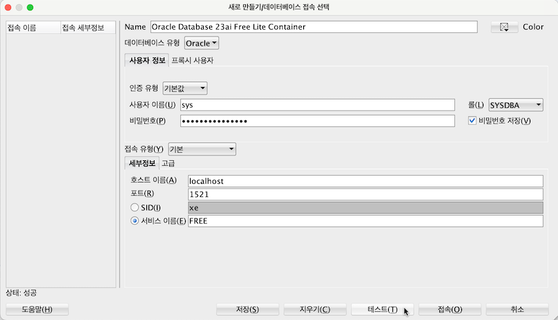
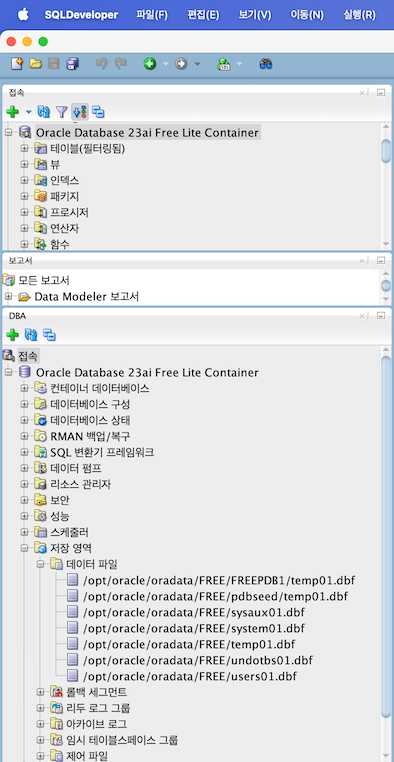
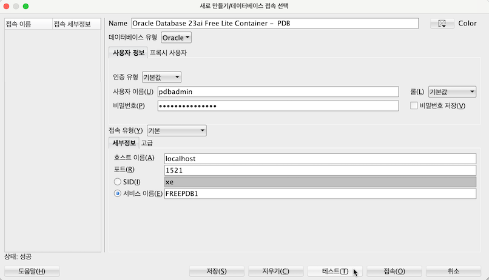
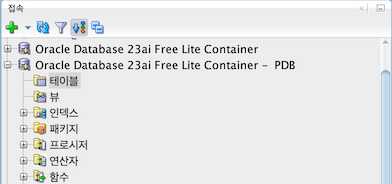

4.2.3 Oracle Database 23ai Free Container Image
지난 2023년 4월, 개발자를 위해 개인 데스크탑/랩탑에서 실행할 수 있는 Oracle Database 23c Free Container Image를 출시하였습니다. 로컬 PC에 docker CLI 호환 도구를 통해 실행할 수 있습니다. 이후 23c 버전은 ai 관련 기능을 추가하여 23ai로 이름이 변경되었습니다. 많은 개발자들이 Arm기반 맥북 환경을 사용하고 있고, 개발자들의 요구에 따라 2024년 11월, 작성일 기준 이번달에 ARM기반에서 구동되는 이미지를 출시하였습니다. 그래서 현재는 윈도우즈, 리눅스, 맥 환경에서 모든 사용할 수 있습니다.
- Introducing Oracle Database 23c Free – Developer Release
- Announcing Oracle Database 23ai Free container images for ARM-based Apple MacBook computers
Oracle Database 23ai Free Container Image
-
https://container-registry.oracle.com/ords/ocr/ba/database/free
-
Full, Lite 2가지 이미지가 있으며, 해당 페이지는 아래와 같이 설명하고 있습니다.
- The
Fullimage: supports all the database features provided by Oracle Database 23ai Free. - The
Liteimage: smaller image size with a stripped-down installation of the database.
- The
-
각 이미지를 다운로드 받아보면 확연한 크기 차이를 확인할 수 있습니다.
- Full : AMD 9.45 GB / ARM 9.01 GB
- Lite: AMD 1.82GB / ARM 1.71GB
> docker images REPOSITORY TAG IMAGE ID CREATED SIZE container-registry.oracle.com/database/free 23.5.0.0-lite-arm64 0b5c6efe0bdd 5 weeks ago 1.71GB container-registry.oracle.com/database/free 23.5.0.0-lite-amd64 742f1b37af1d 3 months ago 1.82GB container-registry.oracle.com/database/free 23.5.0.0-arm64 8e32bb912325 7 weeks ago 9.01GB container-registry.oracle.com/database/free 23.5.0.0-amd64 e1ff84cf03ed 3 months ago 9.45GB
Macbook ARM64에서 실행 예시
Docker Desktop 라이선스 이슈로 공식문서에서 예시는 podman을 사용하고 있습니다. 예시에서는 Rancher Desktop을 사용합니다.
Oracle Database 23ai Free Container Image 실행하기
-
서울 또는 춘천에서도 동일한 이미지를 제공하고 있습니다. 원하는 이미지를 사용합니다.
container-registry-seoul.oracle.com/database/free:23.5.0.0-lite-arm64 또는 container-registry.oracle.com/database/free:23.5.0.0-lite-arm64 -
Oracle Database 23ai Free Container Image ARM 버전 실행
docker run -d \ --name dbfree-23.5.0.0-lite-arm64 \ -p 1521:1521 \ -e ENABLE_ARCHIVELOG=false \ -e ENABLE_FORCE_LOGGING=false \ -e ORACLE_PWD=OracleIsAwesome \ -v OracleDBData:/opt/oracle/oradata/ \ container-registry-seoul.oracle.com/database/free:23.5.0.0-lite-arm64 -
실행결과 확인
$ docker ps -f name=dbfree-23.5.0.0-lite-arm64 CONTAINER ID IMAGE COMMAND CREATED STATUS PORTS NAMES a8aa6e8dea1d container-registry-seoul.oracle.com/database/free:23.5.0.0-lite-arm64 "/bin/bash -c $ORACL…" 4 minutes ago Up 4 minutes (healthy) 0.0.0.0:1521->1521/tcp, :::1521->1521/tcp dbfree-23.5.0.0-lite-arm64 -
데이터베이스가 준비될때까지 기다립니다.
$ docker logs -f dbfree-23.5.0.0-lite-arm64 Expanding oracle data /home/oracle Starting Oracle Net Listener. Oracle Net Listener started. Starting Oracle Database instance FREE. Oracle Database instance FREE started. Pluggable Database FREEPDB1 opened. SQL*Plus: Release 23.0.0.0.0 - Production on Fri Nov 15 07:50:06 2024 Version 23.5.0.24.07 Copyright (c) 1982, 2024, Oracle. All rights reserved. Connected to: Oracle Database 23ai Free Release 23.0.0.0.0 - Develop, Learn, and Run for Free Version 23.5.0.24.07 SQL> ... SQL> Disconnected from Oracle Database 23ai Free Release 23.0.0.0.0 - Develop, Learn, and Run for Free Version 23.5.0.24.07 ######################### DATABASE IS READY TO USE! ######################### ... -
database persistence를 위해 OracleDBData란 이름으로 볼륨을 지정하였습니다. 관련 내용을 확인해 봅니다.
$ kildong@kildong-mac ~ docker volume ls DRIVER VOLUME NAME local OracleDBData $ kildong@kildong-mac ~ docker volume inspect OracleDBData [ { "CreatedAt": "2024-11-15T16:49:41+09:00", "Driver": "local", "Labels": null, "Mountpoint": "/var/lib/docker/volumes/OracleDBData/_data", "Name": "OracleDBData", "Options": null, "Scope": "local" } ] $ kildong@kildong-mac ~ sudo ls -la /var/lib/docker/volumes/OracleDBData/_data Password: ls: /var/lib/docker/volumes/OracleDBData/_data: No such file or directory-
맥에서 Rancher Desktop을 사용하는 경우에 아래와 같이 확인합니다.
# Rancher Desktop-managed VM의 Shell 실행 rdctl shell # 마운트한 OracleDBData 볼륨 확인 docker volume ls # 마운트한 OracleDBData 볼륨 상세 정보 확인 docker volume inspect OracleDBData # FREE 데이터베이스 인스턴스의 파일들 확인 sudo ls -lahtr /var/lib/docker/volumes/OracleDBData/_data/FREE # FREE 데이터베이스 인스턴스내 PDB FREEPDB1의 파일들 확인 sudo ls -lahtr /var/lib/docker/volumes/OracleDBData/_data/FREE/FREEPDB1$ kildong@kildong-mac ~ rdctl shell lima-rancher-desktop:/Users/kildong$ docker volume ls DRIVER VOLUME NAME local OracleDBData lima-rancher-desktop:/Users/kildong$ docker volume inspect OracleDBData [ { "CreatedAt": "2024-11-15T16:49:41+09:00", "Driver": "local", "Labels": null, "Mountpoint": "/var/lib/docker/volumes/OracleDBData/_data", "Name": "OracleDBData", "Options": null, "Scope": "local" } ] lima-rancher-desktop:/Users/kildong$ sudo ls -la /var/lib/docker/volumes/OracleDBData/_data total 20 drwxr-xr-x 4 54321 54321 4096 Nov 15 16:49 . drwx-----x 3 root root 4096 Nov 15 16:49 .. -rw-r--r-- 1 54321 54321 26 Oct 9 15:41 .FREE.created drwxr-x--- 4 54321 54321 4096 Nov 15 16:49 FREE drwxr-xr-x 3 54321 54321 4096 Oct 9 15:41 dbconfig lima-rancher-desktop:/Users/kildong$ sudo ls -lahtr /var/lib/docker/volumes/OracleDBData/_data/FREE total 2G -rw-r----- 1 54321 54321 17.9M Oct 9 15:41 control02.ctl drwxr-xr-x 4 54321 54321 4.0K Nov 15 16:49 .. drwxr-x--- 2 54321 54321 4.0K Nov 15 16:49 pdbseed -rw-r----- 1 54321 54321 200.0M Nov 15 16:49 redo03.log -rw-r----- 1 54321 54321 200.0M Nov 15 16:49 redo01.log -rw-r----- 1 54321 54321 20.0M Nov 15 16:49 temp01.dbf drwxr-x--- 4 54321 54321 4.0K Nov 15 16:49 . drwxr-x--- 2 54321 54321 4.0K Nov 15 16:50 FREEPDB1 -rw-r----- 1 54321 54321 7.0M Nov 15 17:05 users01.dbf -rw-r----- 1 54321 54321 25.0M Nov 15 17:05 undotbs01.dbf -rw-r----- 1 54321 54321 1.0G Nov 15 17:05 system01.dbf -rw-r----- 1 54321 54321 610.0M Nov 15 17:05 sysaux01.dbf -rw-r----- 1 54321 54321 200.0M Nov 15 17:05 redo02.log -rw-r----- 1 54321 54321 17.9M Nov 15 17:05 control01.ctl lima-rancher-desktop:/Users/kildong$ sudo ls -lahtr /var/lib/docker/volumes/OracleDBData/_data/FREE/FREEPDB1 total 780M drwxr-x--- 4 54321 54321 4.0K Nov 15 16:49 .. -rw-r----- 1 54321 54321 20.0M Nov 15 16:50 temp01.dbf drwxr-x--- 2 54321 54321 4.0K Nov 15 16:50 . -rw-r----- 1 54321 54321 100.0M Nov 15 17:05 undotbs01.dbf -rw-r----- 1 54321 54321 280.0M Nov 15 17:05 system01.dbf -rw-r----- 1 54321 54321 400.0M Nov 15 17:05 sysaux01.dbf
-
-
SYS, SYSTEM, PDBADMIN 유저를 사용합니다. 실행된 컨테이너상에 sqlplus를 통해 접속가능합니다.
docker exec -it dbfree-23.5.0.0-lite-arm64 sqlplus sys/OracleIsAwesome@FREE as sysdba docker exec -it dbfree-23.5.0.0-lite-arm64 sqlplus system/OracleIsAwesome@FREE docker exec -it dbfree-23.5.0.0-lite-arm64 sqlplus pdbadmin/OracleIsAwesome@FREEPDB1 docker exec -it dbfree-23.5.0.0-lite-arm64 sqlplus sys/OracleIsAwesome@FREEPDB1 as sysdba-
예시
$ kildong@kildong-mac ~ docker exec -it dbfree-23.5.0.0-lite-arm64 sqlplus sys/OracleIsAwesome@FREE as sysdba SQL*Plus: Release 23.0.0.0.0 - Production on Fri Nov 15 08:41:28 2024 Version 23.5.0.24.07 Copyright (c) 1982, 2024, Oracle. All rights reserved. Connected to: Oracle Database 23ai Free Release 23.0.0.0.0 - Develop, Learn, and Run for Free Version 23.5.0.24.07 SQL> select instance_name,status from v$instance; INSTANCE_NAME STATUS ---------------- ------------ FREE OPEN SQL>
-
호스트에서 SQL Developer로 접속해 보기
-
개발자 데스크탑/랩탑에 사용할 클라이언트를 가정하여, SQL Developer로 아래와 같이 접속할 수 있습니다.
-
SQL Developer를 실행합니다.
-
새 데이터베이스 접속을 만듭니다.
- 사용자 이름/비밀번호: sys / 앞서 설정한 암호
- 롤: SYSDBA
- 서비스 이름: FREE

-
테스트가 성공하면, 입력한 데이터 베이스 접속을 저장하고 접속합니다.
-
접속에 성공했습니다. 메뉴에서 보기(V) 선택후 DBA를 선택하면, 앞서 Docker 명령으로 확인한 DB 관련 파일위치를 동일하게 확인할 수 있습니다.

-
PDB도 동일한 방법으로 접속 테스트합니다.
- 새 데이터베이스 접속을 만듭니다.
- 사용자 이름/비밀번호: pdbadmin / 앞서 설정한 암호
- 롤: 기본값
- 서비스 이름: FREEPDB1

-
테스트가 성공하면, 입력한 데이터 베이스 접속을 저장하고 접속합니다.
-
접속에 성공했습니다. 기본 생성된 테이블이 없습니다. 필요하면 생성하여 사용합니다.

23ai - AI Vector Search 테스트
-
sys 유저로 FREEPDB1 데이터베이스에 접속합니다.
docker exec -it dbfree-23.5.0.0-lite-arm64 sqlplus sys/OracleIsAwesome@FREEPDB1 as sysdba -
테이블스페이스와 사용할 유저를 생성합니다.
CREATE TABLESPACE USERS DATAFILE 'USERS' SIZE 64M AUTOEXTEND ON; CREATE USER myuser IDENTIFIED BY password123 DEFAULT TABLESPACE users TEMPORARY TABLESPACE temp QUOTA UNLIMITED ON users; GRANT CONNECT, RESOURCE TO myuser; -
생성한 유저로 다시 접속합니다.
docker exec -it dbfree-23.5.0.0-lite-arm64 sqlplus myuser/password123@FREEPDB1 -
Vector Search에 사용할 샘플 데이터를 추가합니다.
DROP TABLE galaxies PURGE; CREATE TABLE galaxies (id NUMBER, name VARCHAR2(50), doc VARCHAR2(500), embedding VECTOR); INSERT INTO galaxies VALUES (1, 'M31', 'Messier 31 is a barred spiral galaxy in the Andromeda constellation which has a lot of barred spiral galaxies.', '[0,2,2,0,0]'); INSERT INTO galaxies VALUES (2, 'M33', 'Messier 33 is a spiral galaxy in the Triangulum constellation.', '[0,0,1,0,0]'); INSERT INTO galaxies VALUES (3, 'M58', 'Messier 58 is an intermediate barred spiral galaxy in the Virgo constellation.', '[1,1,1,0,0]'); INSERT INTO galaxies VALUES (4, 'M63', 'Messier 63 is a spiral galaxy in the Canes Venatici constellation.', '[0,0,1,0,0]'); INSERT INTO galaxies VALUES (5, 'M77', 'Messier 77 is a barred spiral galaxy in the Cetus constellation.', '[0,1,1,0,0]'); INSERT INTO galaxies VALUES (6, 'M91', 'Messier 91 is a barred spiral galaxy in the Coma Berenices constellation.', '[0,1,1,0,0]'); INSERT INTO galaxies VALUES (7, 'M49', 'Messier 49 is a giant elliptical galaxy in the Virgo constellation.', '[0,0,0,1,1]'); INSERT INTO galaxies VALUES (8, 'M60', 'Messier 60 is an elliptical galaxy in the Virgo constellation.', '[0,0,0,0,1]'); INSERT INTO galaxies VALUES (9, 'NGC1073', 'NGC 1073 is a barred spiral galaxy in Cetus constellation.', '[0,1,1,0,0]'); COMMIT; -
조회 결과값 길이가 큰 관계로 편의상 sqlplus에서 길이 및 포맷지정
col galaxy_1 for a10 col galaxy_2 for a10 col distance for 0.00000000000000000 -
벡터 거리를 조회합니다.
SELECT g1.name AS galaxy_1, g2.name AS galaxy_2, VECTOR_DISTANCE(g2.embedding, g1.embedding, COSINE) AS distance FROM galaxies g1, galaxies g2 WHERE g1.id = 1 ORDER BY distance ASC; -
아래와 같이 두 벡터간의 거리를 조회할 수 있습니다.
GALAXY_1 GALAXY_2 DISTANCE ---------- ---------- -------------------- M31 M31 -0.00000011920928955 M31 M77 -0.00000011920928955 M31 M91 -0.00000011920928955 M31 NGC1073 -0.00000011920928955 M31 M58 0.18350338935852051 M31 M63 0.29289323091506958 M31 M33 0.29289323091506958 M31 M49 1.00000000000000000 M31 M60 1.00000000000000000 9 rows selected. -
Oracle Database 23ai Free Container Image를 로컬에서 실행하여 Vector Search와 같은 23ai의 기능을 테스트할 수 있음을 확인하였습니다. 특히 이제는 맥 ARM 기반 개발환경에서 사용할 수 있습니다.
참고
이 글은 개인으로서, 개인의 시간을 할애하여 작성된 글입니다. 글의 내용에 오류가 있을 수 있으며, 글 속의 의견은 개인적인 의견입니다.